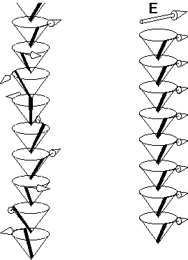
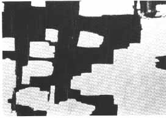
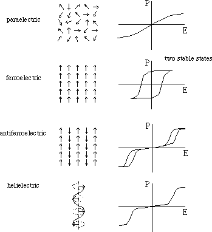

Also in polar liquid crystals, the direction given by n describes quadrupolar order, i.e. the physics is invariant under the inversion n -> -n. The first such phase to be investigated was chiral smectic C, or C* for short. If we look at the local structure of this phase (figure 8) we see that its monoclinic symmetry has a two-fold rotation axis (C2) going out of the plane of the screen. A polarization vector may go out of or into this plane and is in either case unchanged under the two-fold rotation. If the C phase is chiral the plane cannot be a mirror plane and therefore the polarization cannot be cancelled by the reflection symmetry as it would in the case of a non-chiral smectic C. The symmetry of the C* phase thus permits a polarization which is perpendicular to the tilt plane (and perpendicular to the director n).
|
|
| Figure 8. Monoclinic symmetry of tilted smectics (one layer). |
If all molecules in all layers would tilt in the same direction we would therefore have a macroscopic polarization perpendicular to the tilt plane. However this is not the case. Foremost due to the chirality, the tilt direction precesses in a helical fashion in space as we move along the layer normal from layer to layer (figure 9).
|
 |
Figure 9. The helical configuration of the director-polarization couple is characteristic of a bulk smectic C*. The helix is wound up by a sufficiently strong electric field E. The increasing field induces a macroscopic polarization (which is thus not spontaneous) and finally polarizes the medium to saturation (all dipolar contributions lined up parallel to the field). |
Such a structure is called helielectric or more precisely helical antiferroelectric, because the helix cancels the macroscopic polarization to zero. The helix can be unwound by applying a sufficiently strong electric field perpendicular to the helix axis until all dipoles have been turned into the field direction. It can, however, also be suppressed by surfaces, in a special so-called bookshelf geometry (smectic layers perpendicular to the surfaces), when these come sufficiently close together, typically one or two micrometers. In this case spontaneous domains of UP and DOWN polarization appear (figure 10) and the material between the surfaces acquire ferroelectric properties (Clark and Lagerwall, 1980). Such a structure is therefore called a Surface-Stabilized Ferroelectric Liquid Crystal (SSFLC).
|
 |
| Figure 10. Domains of opposite ferroelectric polarization in smectic F* phase (a tilted smectic phase lying below the smectic C* phase in temperature) in the substance HOBACPC. Image field width is 320 micrometers. |
The attribute ferroelectric means that its response to an external electric field of an SSFLC is not any longer linear around the origin (as in the helielectric or antiferroelectric case) but strongly non-linear, with a certain field threshold (figure 11). This means that the structure is bistable and can take one of two different states of opposite polarization in the absence of any external field. In other words, it has memory properties. Moreover, the switching from one state to the other on reversing the sign of the field, is now extremely fast, obeying the simple equation
where tau is a characteristic switching time, gamma a characteristic viscosity, P the polarization and E the electric field. The switching time is found to be in the lower microsecond range. The surface-stabilized ferroelectric liquid crystals and their device physics are currently a domain of intense international research.
"Ferroelectric" also means that there exists a macroscopic
polarization in the absence of an external electric field, which is
switchable between two stable states. (If the macroscopic
polarization is not switchable the state is called
pyroelectric.) It may be noted that no ferroelectricity has
been found to exist so far in the bulk of any liquid crystalline
phase. Thus the smectic C* phase is not ferroelectric per se. Surface
stabilization is required for the appearance of macroscopic
polarization and discrete stable states.
|
 |
Figure 11. Response of polar dielectrics (containing local permanent dipoles) to an applied electric field; from top to bottom: paraelectric, ferroelectric, antiferroelectric and helielectric (helical antiferroelectric). A ferroelectric phase shows the peculiarity of two stable states. These states are polarized in opposite directons (±P) in absence of applied field (E=0). The property in a material to have two stable states is called bistability. |